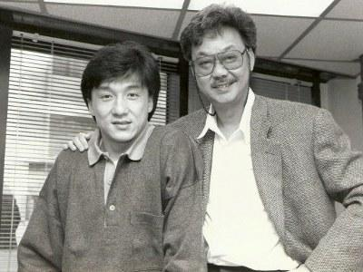
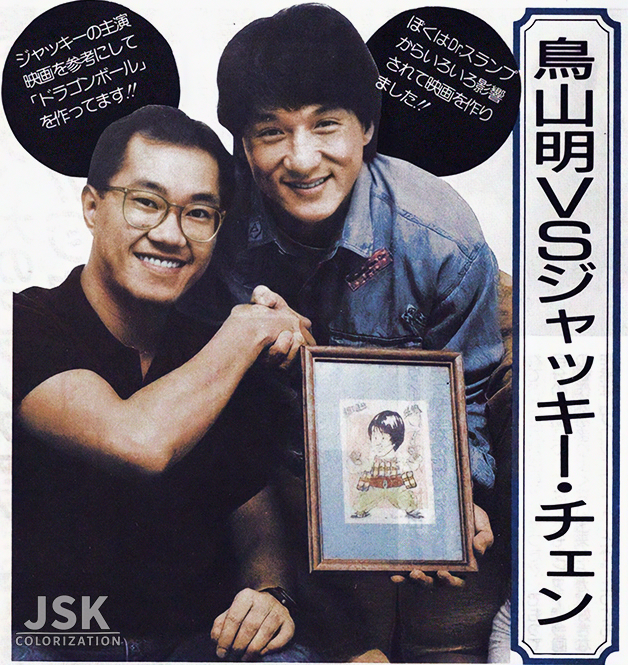
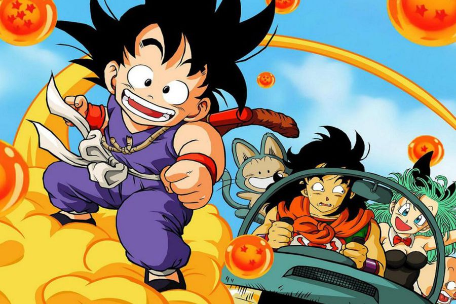

¿Quién es su mejor amigo?
 Willie ChanWillie Chan se convirtió en el mánager personal de Jackie y en su gran amigo, y lo ha sido durante más de 30 años. Jugó un papel decisivo en el lanzamiento de la carrera internacional de Chan, comenzando con sus primeras incursiones en la industria cinematográfica estadounidense en los años 1980. Su primera película de Hollywood fue The Big Brawl de 1980.19 Un año después interpretó un papel menor en la película The Cannonball Run, cinta que recaudó 100 millones de dólares en todo el mundo y que contó con un elenco de estrellas encabezado por Burt Reynolds y Roger Moore.
Dato extra de Jackie Chan:¡Jackie Chan y Akira Toriyama: una amistad que no todos conocen!
Cuando Krillin y Gokú se inscriben en su primer Torneo de las Artes Marciales, el maestro Roshi decide hacerse con un puesto. Sabe que podrá vencer a sus estudiantes y con la derrota, no perderán el interés por las artes marciales. Pero para hacerlo, necesita un disfraz. Se viste de traje negro y peluca azul, pero no es suficiente. Necesita un nombre: Jackie Chun. El seudónimo es una clara referencia a Jackie Chan, el inmenso actor que combina las artes marciales con la comedia. Pocos sabían que detrás de ese guiño había una amistad basada en la más pura admiración e inspiración mutua y que quedó inmortalizada en una revista. El de ellos era un cariño de los buenos.
 